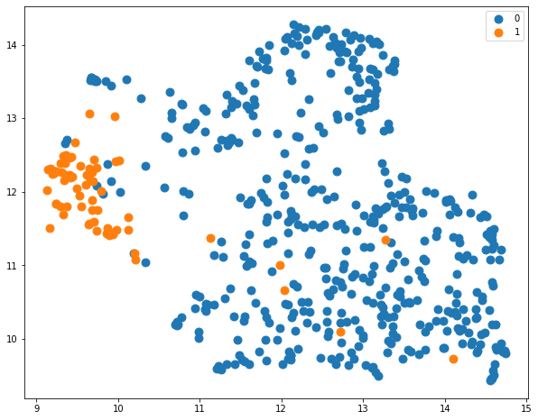

(Tutorial) Exploring Natural Language Embeddings
Words are wind.

Interested in how to plot BERT embeddings for different text? In the example linked, I obtained BERT embeddings for all the sentences from the book series ‘A Song of Ice and Fire’ (ASOIAF), the original novels which gave birth to the ‘A Game of Thrones’ TV show. By inspecting these embeddings, we could make mathematically make clear distinctions between how different characters were written, and how George RR Martin’s writing style changed for each book.
This is straightforward to do if you know how. Overall, you need to follow the process:
- Get the texts or the data that you want to embed and split it into chunks.
- Use each input in a forward pass on a pretrained BERT model, getting the last hidden state for the first token from the BERT model output.
- (Optional) Project each embedding into a lower dimension using dimensionality reduction, and plot.
These methods will use PyTorch. If you don’t have it installed, you will need to install it either via
pip install torchor
conda install torchin your terminal. If you are using a notebook (like this tutorial), you must append an exclamation mark to the beginning of the lines.
1. Get the Text or Data
For the ASOIAF novels, I had access to the e-books, which I converted into a text file using Ghostscript. For the tutorial, I am going to assume that you have access to a file which contains the data you want to embed, otherwise I will be providing a different example. Due to copyright reasons, I will not be using any excerpts from a Song of Ice and Fire in this tutorial.
Instead, I will use an open source data set from the datasets library, called sms_spam. This contains raw SMS messages and a hand-classified label indicating if they are spam or not. You can of course completely customise the text that you use, as all these methods will be generally applicable.
Download the dataset
If you haven’t already, you will need to install the library into python, using e.g.
pip install datasetsAfter that, we load the dataset.
from datasets import load_dataset
df = load_dataset("sms_spam", split="train")## Reusing dataset sms_spam (/home/danny/.cache/huggingface/datasets/sms_spam/plain_text/1.0.0/53f051d3b5f62d99d61792c91acefe4f1577ad3e4c216fb0ad39e30b9f20019c)Once the dataset is loaded, we can inspect it:
df## Dataset({
## features: ['sms', 'label'],
## num_rows: 5574
## })Currently it is a huggingface Dataset object. It makes it easier to use a pandas dataframe, which we will use only 10% of (for simplicity, it’s a big dataset).
import pandas as pd
df = pd.DataFrame(df).sample(frac=0.1)
df.columns = ["text", "label"]We can take a first look at the dataset using the .head() command giving us the top 5 entries
df.head()## text label
## 2995 No idea, I guess we'll work that out an hour a... 0
## 3951 I got to video tape pple type in message lor. ... 0
## 3134 So no messages. Had food?\n 0
## 3873 I am joining today formally.Pls keep praying.w... 0
## 456 Si si. I think ill go make those oreo truffles.\n 0Here, a 1 corresponds to the text message being a spam message and 0 corresponds to a regular SMS.
We can embed each message (in the text column) individually, and see if there is any separability between spam messages and regular ones. Note that similar to the original ASOIAF example, we may also want to do an embedding for each individual sentence. In that case, we may want to split the text by sentence, then form a large dataframe for each sentence. However, for simplicity, I am going to embed each text in its entirety with BERT.
2. Pass the text through the BERT model
To get access to the BERT model, we will use Huggingface. This is a python library and open source repository containing large amounts of language models and datasets. Like before, we will need to install the transformers library to access the models, via
pip install transformersthen we can use python to load the BERT model.
Using a GPU or CPU
If you have access to a GPU with CUDA set up, great! It makes the model run a lot faster, but requires moving variables to the cuda device. Otherwise, a CPU will be fine. Either way, you can run this line to set up the device that we are using.
import torch
device = "cuda" if torch.cuda.is_available() else "cpu"For me, this is:
device## 'cuda'Downloading and using the Model and Tokenizer
Now we import two classes from Huggingface: the model itself, used for forward passes, and the tokenizer, used to translate raw text input into something that the model understands. Then we use the .from_pretrained() function to download the specific model and tokenizer from the BERT class of models that we want to use. In this case, I am specifying bert-base-cased, the smaller BERT model.
from transformers import BertModel, BertTokenizer
model = BertModel.from_pretrained("bert-base-cased").to(device)## Some weights of the model checkpoint at bert-base-cased were not used when initializing BertModel: ['cls.predictions.bias', 'cls.predictions.transform.LayerNorm.bias', 'cls.predictions.transform.LayerNorm.weight', 'cls.seq_relationship.bias', 'cls.seq_relationship.weight', 'cls.predictions.decoder.weight', 'cls.predictions.transform.dense.weight', 'cls.predictions.transform.dense.bias']
## - This IS expected if you are initializing BertModel from the checkpoint of a model trained on another task or with another architecture (e.g. initializing a BertForSequenceClassification model from a BertForPreTraining model).
## - This IS NOT expected if you are initializing BertModel from the checkpoint of a model that you expect to be exactly identical (initializing a BertForSequenceClassification model from a BertForSequenceClassification model).tokenizer = BertTokenizer.from_pretrained("bert-base-cased")Next I make a function where raw text is the input, and the output is a BERT embedding. I will explain each step in this function afterwards.
def embed(prompt):
encoded_input = tokenizer(prompt, return_tensors='pt', padding=True, truncation=True).to(device)
X = model(**encoded_input)
return X.last_hidden_state[:, 0, :]The function inputs a prompt, which is a string. This string gets passed to the model’s tokenizer (which is already defined in the environment), which is padded and truncated. This means that if the string is too large for the model, it cuts off the end, and if it is too small, null strings get padded so that all inputs are the same length. Next, the encoded input goes through as forward pass of the model, which means augmenting the original input many times based on the parameters of BERT.
During the tokenizing of the string, an extra [CLS] token is added to the beginning of the text, called a classification token. This token depends on the context of the sentence/paragraph because of the model architecture. This token is exactly what we want to use to represent our input, so we take the final hidden state output by the BERT model, and then the first element from that hidden state which corresponds to the [CLS] token, which is what the function is returning.
Embedding the Text
As an example of what the embedding actually is, we input a text and output a vector with shape:
embed("Help I'm stuck in a function input").shape## torch.Size([1, 768])And so is a 768-dimensional representation of our input. Now we just need to repeat this for our entire data set to build our embeddings. In this example, we have a representation of Help I'm stuck in a function input, but we will want representations of text in our data. We preemptively make a new DataFrame for our embeddings, and embed each input text as a row, by looping over our data:
embedding_df = pd.DataFrame(index=df.index, columns = range(768))
for i in range(len(df)):
embedding_df.loc[df.index[i], :] = embed(df.text.values[i]).cpu().detach()Note that in my case, I am saving embedding_df to the CPU, as I won’t have enough memory to store this on my GPU. The extra .cpu().detach() line is not necessary if you have been using a CPU the whole time.
3. Project the Embeddings into a Lower Dimension to Plot
Since the embeddings are 768-dimensional, we cannot inspect them manually to see how they look! Instead, we are going to use UMAP to project the 768 dimensions to 2 (or 3) and plot them as a scatter plot. For completeness, I will use the same hyperparameters as the original blog post, with n_neighbors=30 and min_dist=0, to try to preserve out-of-class clustering. See the basic UMAP parameters section on the UMAP documentation for more information.
import umap
reducer = umap.UMAP(n_components = 2, n_neighbors = 30, min_dist=0.0, )
projected_embeddings = reducer.fit_transform(embedding_df.values)We have used the parameter n_components=2 as we want UMAP in 2D. If you wanted to do a 3D scatter plot, you could change this to n_components=3, but you would also need to adjust the scatter plot below to be 3D.
Now we can plot the projected embeddings.
import matplotlib.pyplot as plt
labels = df.label
for l in labels.unique():
plt.scatter(projected_embeddings[labels == l, 0], projected_embeddings[labels == l, 1], label = l)
plt.legend();
Recall: a label of 1 corresponds to spam and 0 corresponds to no spam. We can clearly see there is a large distinction between spam messages and regular text messages, as expected!
This indicates that the language that a spam message uses is identifiably different to the language from a regular message. Whilst this might seem trivial to a human, it means that we can use these embeddings to classify a spam message. Since we can easily draw a line to distinguish the two classes, a classification approach (such as logistic regression) can be straightforwardly applied to accurately detect if a message is a spam one.
These methods are obviously applicable to more complex scenarios, such as book chapters in the original post.
Daniel Williams
CDT Student
I am a PhD student studying at the University of Bristol under the COMPASS CDT, and previously studied at the University of Exeter. My research is currently regarding truncated density estimation, and unnormalised models. But I am also interested in AI more generally, including all the learnings, Machine, Deep and Reinforcement (as well as some others!).